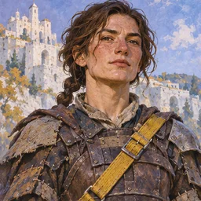
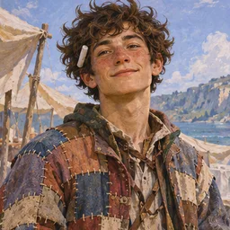
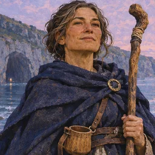
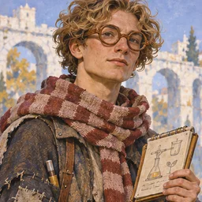
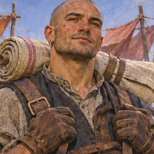
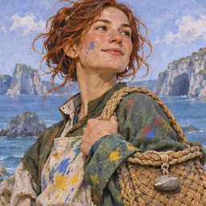
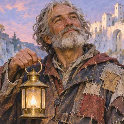
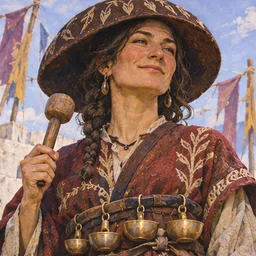

Лада Край
воин 3 · ОЗ 31 · КД 11 · Скорость 30 фтКамнерез и страховщица на высотных работах
Короткая коса, пыльные плечи, жёлтая стропа поперёк обычного дорожного доспеха.
Ты пришла на площадь за новыми клиньями; на спине кита виден знакомый рабочий платок.
Открыть фигурку для поля
Оружие и заклинания
Оружие · Длинный меч, Ручной топор

Тим Рен
плут 3 · ОЗ 24 · КД 13 · Скорость 30 фтГородской верхолаз и ученик рисовальщика
Куртка с пришитыми лоскутами, мел за ухом, мягкие сапоги с прочной шнуровкой.
Ты зарисовывал постамент, когда появилась белая фигура; теперь хочешь увидеть чудо с той стороны, которую не видно с площади.
Открыть фигурку для поля
Оружие и заклинания
Оружие · Рапира, Короткий лук

Сана Стропа
жрец 3 · ОЗ 24 · КД 11 · Скорость 30 фтПоходная целительница, привыкшая спрашивать перед помощью
Тёмно-синяя накидка, деревянная чашка у пояса, обычный дорожный посох.
Ты встречала рабочую смену на площади; спасённые люди наверху ещё не могут спуститься.
Открыть фигурку для поля
Оружие и заклинания
Оружие · Боевой посох
Заклинания · Лечащее слово, Обнаружение магии

Илия Тон
волшебник 3 · ОЗ 20 · КД 12 · Скорость 30 фтУченик волшебника, исследующий свет и вещество
Стёкла в деревянной оправе, полосатый шарф, карманная тетрадь с рисунками простых опытов.
Ты принёс на площадь образцы прозрачного камня и увидел, как тень сломала плиту.
Открыть фигурку для поля
Оружие и заклинания
Оружие · Боевой посох
Заклинания · Обнаружение магии, Туманный шаг

Бор Парус
воин 3 · ОЗ 31 · КД 11 · Скорость 30 фтРемесленник широких полотнищ и походных укрытий
Бритая голова, крепкие перчатки, рулон ткани за плечом.
Твои паруса висят на площади, и тень кита уже прижала один к мостовой.
Открыть фигурку для поля
Оружие и заклинания
Оружие · Длинный меч, Ручной топор

Мира Ясенка
плут 3 · ОЗ 24 · КД 13 · Скорость 30 фтСборщица красок и внимательная наблюдательница берега
Зелёные манжеты в пятнах краски, плетёная сумка, морская галька в застёжке.
В саду лежит твоя партия ткани; с площади видно, как по дороге туда катят тележку с белыми обломками.
Открыть фигурку для поля
Оружие и заклинания
Оружие · Рапира, Короткий лук

Ост Люмен
жрец 3 · ОЗ 24 · КД 11 · Скорость 30 фтСтранствующий хранитель дорожных огней
Серебристая борода, простая латунная лампа, поношенная куртка с множеством заплат.
Ты остановился на площади помочь зажечь вечерние лампы; новое божество не похоже ни на одну знакомую тебе историю.
Открыть фигурку для поля
Оружие и заклинания
Оружие · Боевой посох
Заклинания · Лечащее слово, Обнаружение магии

Вера Чаша
волшебник 3 · ОЗ 20 · КД 12 · Скорость 30 фтКамнерезная акустичка и начинающая волшебница
Круглая шляпа, деревянная колотушка, пояс с маленькими звенящими чашами.
Ты принесла заказчику чашу с самым низким звуком в городе; высоко над площадью ей отвечает неизвестный гул.
Открыть фигурку для поля
Оружие и заклинания
Оружие · Боевой посох
Заклинания · Обнаружение магии, Туманный шаг